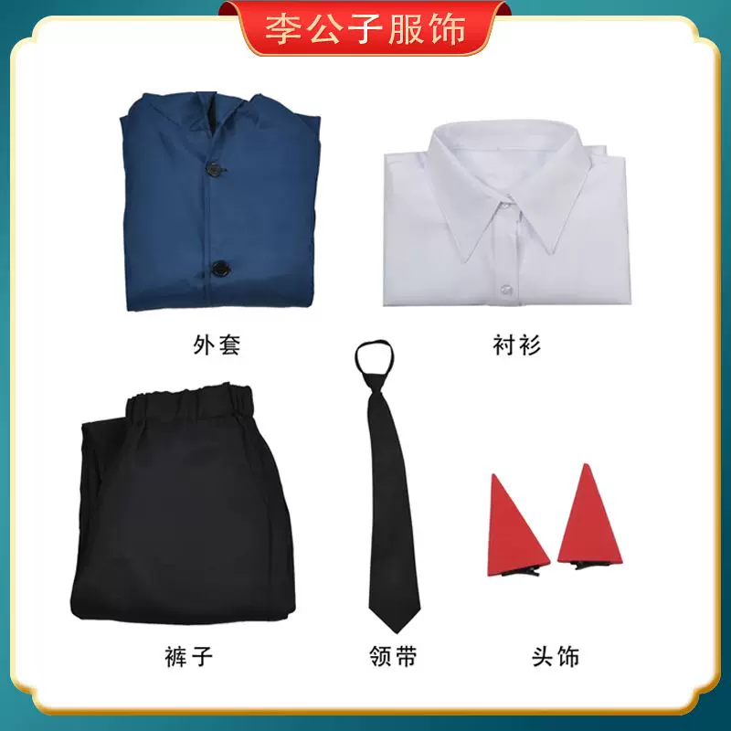
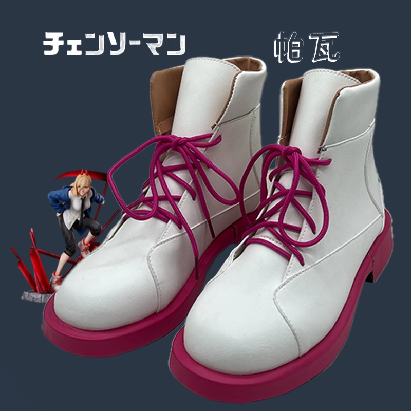

💇♀️ 1. Wig Styling (Power Long Straight Hair)
Step 1: Prepare the Wig
Put the wig on the wig head and comb it smooth.
Step 2: Apply Hair Care Product
Apply hair care liquid / leave-in conditioner / hair oil to reduce static and tangles (especially important in dry weather).
Step 3: Comb Properly
Comb from the ends → middle → roots.
Step 4: Section the Bangs
Section the bangs with a tail comb (wider M-shape in the middle).
Step 5: Cut and Thin the Bangs
Cut the bangs to mouth length using thinning shears from the inside, making them gradually thinner toward the tips.
Step 6: Trim the Sideburns
Trim the sideburns lightly from the inside so they blend naturally with the rest of the hair.
Step 7: Set the Style
Spray care liquid again, then use setting spray to lock the style in place.
💄 2. Power Makeup Tutorial
Step 1: Eyebrows
Shave or cover natural eyebrows short (Power has very short brows).
Step 2: Draw Brows
Use brow gel + red eyeshadow to draw short, soft brows.
Step 3: Base Makeup
Apply light concealer as base.
Step 4: Contact Lenses
Put in red contact lenses.
Step 5: Eyeshadow
Apply red eyeshadow on the outer corner and under-eye area.
Step 6: Define Lash Line
Deepen the lash line with dark shadow.
Step 7: Eyeliner
Draw a sharp winged eyeliner (slightly upturned).
Step 8: False Lashes
Add false lashes (short in front, longer in the back for a wild look).
Step 9: Lower Lashes
Draw lower lashes with a wild, messy feel.
Step 10: Blush
Finish with a little blush on the cheeks.
🎀 Full Original Power Set
Here is everything you need to recreate Power’s classic Chainsaw Man look:
- Blue button-up jacket (outer coat)
- White collared dress shirt
- Black trousers / pants
- Black necktie
- Red horns headpiece (two triangular horns)
- White boots with magenta/pink laces and soles
- Fake fangs (tooth props — very important for her signature look)
- Optional prop: Large scythe / weapon


💡 Important Tip: Always measure your body (bust, waist, hips, shoes size and height) and check the seller’s size chart carefully before buying. Getting the right size makes the costume look much better and more comfortable!
Practice the short brows and wild red eyeshadow a few times! The key is messy lower lashes and that sharp winged liner. Combine with the wig styling above and you’ll have a perfect original Power look.